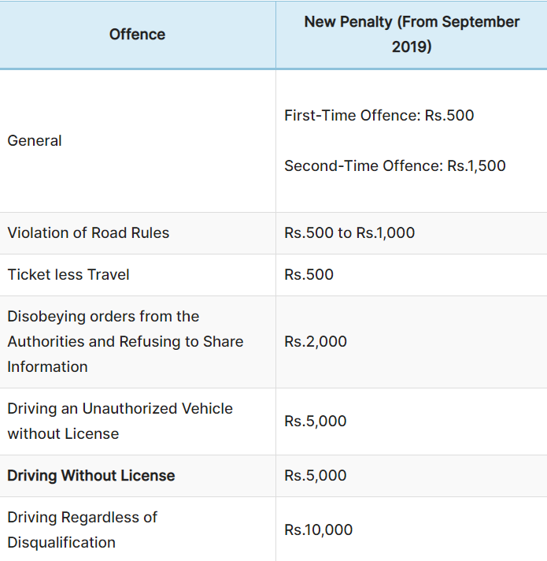
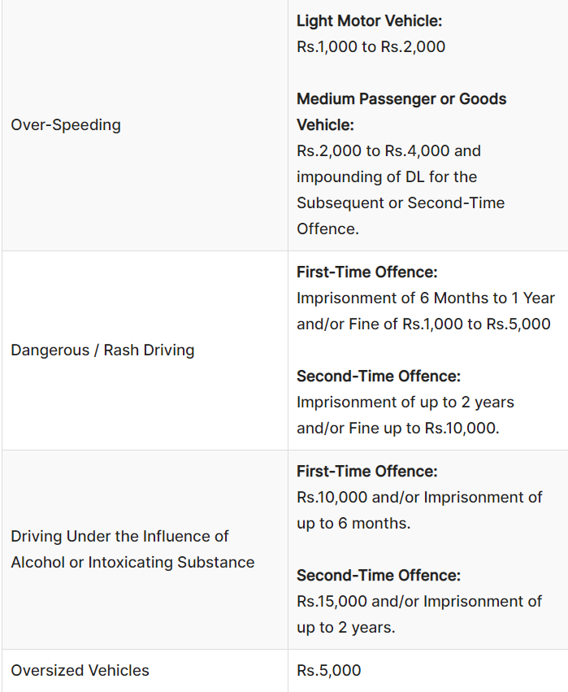
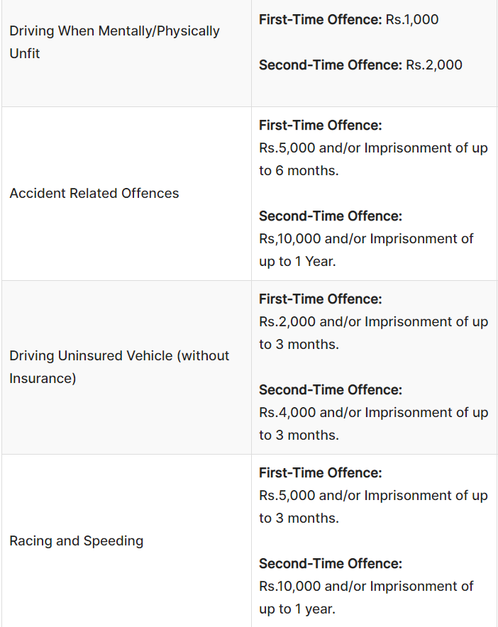
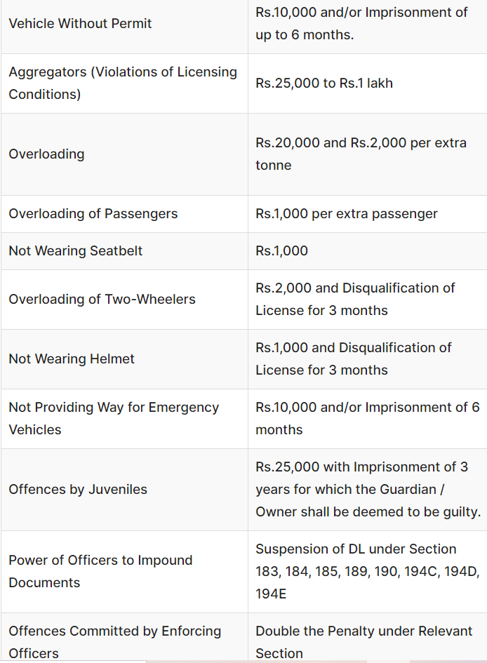

INDIA (IND)
Traffic Rules:
1. Keep To Your Left – Always drive or ride on the left side of the road and let other vehicles overtake you from the right side.
2. Be extra careful when passing through intersections, ensuring your vehicle doesn’t cause inconvenience to other road users.
3. Right of Way- Always give a right of way to vehicles on intersections by letting them continue without stopping in that particular direction in which you are about to proceed.
4. You must give way to emergency vehicles such as fire engines and ambulances.
5. Pedestrians have the right of way at pedestrian crossings or zebra crossings.
6. Always use indicators to let other road users know about the planned change in the direction of travel. If your vehicle indicators get damaged without any warning, use hand signals.
7. Parking – Make sure you don’t park your vehicle in a way it causes any hurdle or disturbance to any other road users.
8. Always drive only in the permissible direction on a one-way road. Also, never park your vehicle in reverse on a one way street.
10. No vehicles should be towed closer to other vehicles on the road. However, vehicles that are mechanically disabled and those confiscated by the police are exceptions to this rule.
11. Drivers should not horn needlessly or excessively or use them in no-honking zones like hospital zones and school zones, etc.
12. Traffic Lights and Signs must be always obeyed.
13. One should respect instructions given by a traffic cop when there are no traffic lights available.
15. Do not drive at more than 25 km/hr, when you passing a procession, meeting, strike, or a march.
16. Essential Documents – Always carry the following documents – Driving license, Registration certificate of the vehicle, Insurance certificate, fitness certificate (in case of commercial vehicle), tourist permit (in case of commercial vehicle) and PUC certificate.
Violations and Penalties:




To know more about TRAFFIC RULES, click on:
Traffic Rules-Introduction
United Kingdom-Traffic Rules and Violations
What is the difference- UK and Indian Traffic Management?